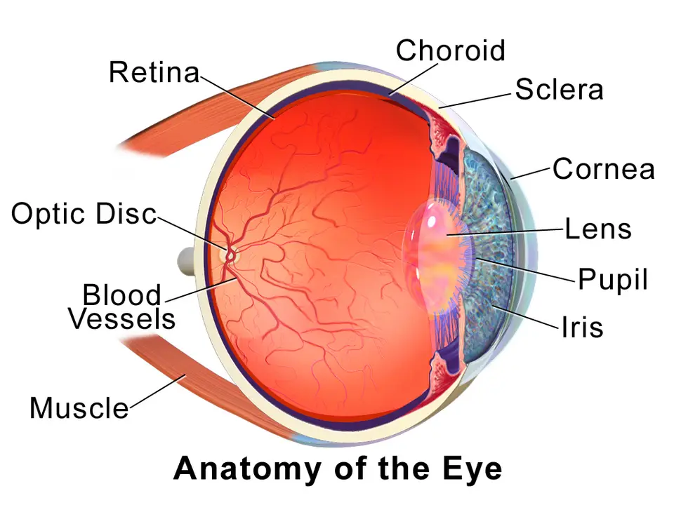
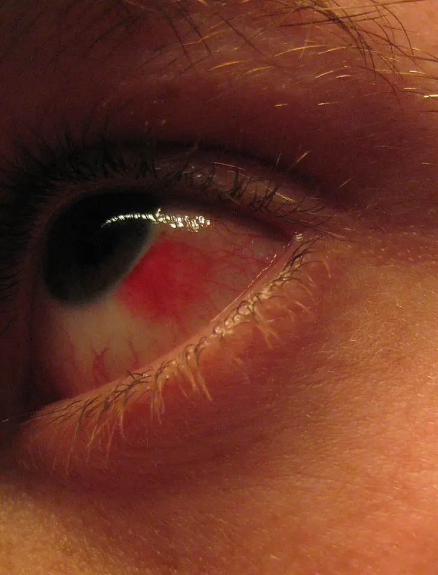

Yeux douloureux, rouges ou prurigineux ; écoulement oculaire — S1.17
Ce diagnostic occupe le sixième rang de fréquence de la Phase A de l’œil rouge et ne porte aucun rang d’exclusion urgente hors traumatisme.
DX.6 — Hémorragie sous-conjonctivale
L’hémorragie sous-conjonctivale impressionne le patient, mais elle reste indolore, ne baisse pas la vision et se résorbe seule en 2 à 3 semainesS1S3. Les Hôpitaux universitaires de Genève (HUG) imposent pourtant une mesure systématique de la tension artérielle, et un bilan de l’hémostase en cas de récidive ou d’atteinte bilatéraleS1. Les larmes artificielles proposées suivent la posologie de l’information professionnelle suisse (AIPS) que publie SwissmedicAIPS 53674AIPS 48624.
1. Définition
L’hémorragie sous-conjonctivale est une accumulation de sang entre la conjonctive et la sclère, due au saignement de vaisseaux conjonctivaux ou épisclérauxS1.
2. Épidémiologie (Suisse, puis Europe)
Une série de 8726 patients a montré une incidence de 2,9 %, qui augmente nettement après 50 ansS3. Le College of Optometrists britannique confirme que la plupart des cas restent idiopathiques et surviennent surtout après 50 ansS2. Aucune prévalence suisse propre ne figure dans la stratégie des HUG, qui classe pourtant cette hémorragie parmi les causes conjonctivales de l’œil rougeS1. Les chiffres disponibles et la répartition des causes selon l’âge justifient le sixième rang.
Le sang provient d’un vaisseau conjonctival ou épiscléral rompu et se loge dans la substance propre de la conjonctiveS1S3. Comme la conjonctive est transparente, la nappe paraît rouge vif, à la manière d’une ecchymose cutanéeS2. Avec l’âge, les attaches fibreuses sous la conjonctive se fragilisent, si bien que le sang diffuse plus largement chez le sujet âgéS3. Les mécanismes de rupture, les causes oculaires locales et le calendrier de la résorption expliquent la conduite.
Ce schéma en couleurs de Blausen Medical, sous licence CC BY 3.0, montre la sclère et la cornée sous lesquelles s’étale le saignementS8.

Le lecteur recherche d’abord sur le schéma brut la coque blanche du globe, puis la cornée transparente en avant.
Lecture guidée.
Le repère 1 montre la sclère, couche blanche recouverte en avant par la conjonctive ; le sang s’accumule entre ces deux couchesS8S1.
Le repère 2 montre la cornée, que la conjonctive ne recouvre pas ; l’hémorragie s’arrête donc au limbe et la vision reste intacteS8S3.
Ce que l’image décide. Une nappe qui respecte la cornée correspond à un saignement superficiel ; une baisse de vision oriente vers une autre lésionS3S1.
Image : Blausen.com staff (2014), CC BY 3.0, Wikimedia Commons, File:Blausen 0388 EyeAnatomy 01.png, consultée le 13.11.2026. Copie annotée : œuvre dérivée sous la même licence.
La démarche confirme d’abord qu’il s’agit d’une nappe hémorragique isolée, puis elle écarte le traumatisme et les autres saignementsS1. Elle mesure ensuite la tension artérielle et réserve le bilan de l’hémostase aux formes récidivantes ou bilatéralesS1S3. La démarche en six étapes relie chaque question posée à l’outil utilisé et à la décision qui en découle.
L’anamnèse recherche un traumatisme, même mineur, car le patient l’oublie souvent tant qu’on ne l’interroge pas en détailS3. Elle précise les médicaments, en particulier anticoagulants et antiagrégants, puis les antécédents d’hypertension, de diabète et de saignementS3S1. Les questions ciblées, la revue des médicaments et les drapeaux rouges guident l’entretien du premier au dernier point.
L’examen reste comparatif et systématique : inspection des deux yeux, éversion des paupières, analyse des sécrétions et examen neurologiqueS1. Il ne se limite pas à l’œil, puisque les HUG demandent de s’assurer de l’absence d’autres saignements extra-oculairesS1. Chaque région figure dans sa fenêtre : tension, vision, paupières, conjonctive, orbite, peau et muqueuses et examen général.
FiP a photographié sa propre hémorragie en couleurs et la publie sous licence CC BY-SA 3.0S7.

Le lecteur recherche d’abord sur le cliché brut la nappe rouge vif sur le blanc de l’œil, puis il vérifie la cornée.
Lecture guidée.
Le repère 1 montre une nappe hématique rouge vif, homogène et bien limitée, qui masque la sclèreS7S1.
Le repère 2 montre la cornée et l’iris, que le sang respecte ; la vision reste donc conservéeS7S3.
Le repère 3 montre la conjonctive inférieure moins touchée, sans follicule ni sécrétionS7S1.
Le repère 4 montre le bord palpébral sans croûte ni sécrétion, ce qui écarte une conjonctivite ou une blépharite associéeS7S1.
Ce que l’image décide. Une nappe isolée et indolore conduit à mesurer la tension artérielle ; une récidive ou une atteinte bilatérale impose un bilan de l’hémostaseS1.
Image : FiP, CC BY-SA 3.0, Wikimedia Commons, File:Subconjunctival hemorrhage 01.jpg, consultée le 13.11.2026. Copie annotée : œuvre dérivée sous la même licence.
Le syndrome d’« œil rouge indolore à vision normale » impose de distinguer la nappe hématique de la rougeur vasculaire diffuse d’une conjonctivite ou d’une épisclériteS1. Les HUG notent aussi que la conjonctivite virale s’accompagne fréquemment d’hémorragies conjonctivales, ce qui peut créer une confusionS1. Le tableau comparatif et les causes à rechercher guident ce tri entre une nappe banale et une maladie à traiter.
Le diagnostic est clinique : une nappe hématique sous-conjonctivale bulbaire, localisée, sans sécrétion, chez un patient qui n’a habituellement aucun symptômeS1. L’absence de baisse visuelle et de douleur complète le tableau typique décrit par la revue d’AnkaraS3. Les critères positifs et les formes cliniques fixent ce qui suffit au diagnostic.
L’arbre part du traumatisme, puis il trie la forme isolée, la forme récidivante et la forme qui ne se résorbe pasS1. Le tableau décisionnel se lit de haut en bas, et la première ligne positive fixe la conduite.
11. Prise en charge selon les recommandations suisses
11.A But
La prise en charge rassure le patient, soulage la gêne éventuelle et dépiste une hypertension ou un trouble de l’hémostase méconnuS1S3. Elle vise aussi à ne pas manquer une lésion traumatique du globe ou de l’orbiteS1S3.
Le patient revient si la nappe ne se résorbe pas en 3 semaines, si elle récidive ou si d’autres saignements apparaissentS1. La surveillance datée fixe les contrôles tensionnels, les seuils d’alerte et la date du dernier contrôle de la nappe.
11.D Pronostic
Le pronostic visuel est excellent, puisque la nappe se résorbe spontanément en 2 à 3 semaines en passant par les stades de la biligénieS1. Le pronostic général dépend de la cause, et seule une forme récidivante ou persistante exige une évaluation systémiqueS3.
Substitut lacrymal en gel, utilisable comme larme artificielleAIPS 48624.
Indication AIPS
L’AIPS vise la « Substitution du liquide lacrymal en cas de sécheresse oculaire »AIPS 48624.
Dose AIPS
La fréquence est en moyenne « d’1 goutte 3 à 4 fois par jour », et le gel peut être administré plus souvent si nécessaireAIPS 48624.
Contre-indications
L’AIPS cite l’« Hypersensibilité connue à l’un des composants de Viscotears »AIPS 48624.
Grossesse
L’AIPS conclut que « le risque d’exposition pendant la grossesse est considéré comme étant faible »AIPS 48624.
Allaitement
L’AIPS conclut que « le risque d’exposition pendant l’allaitement est considéré comme étant faible »AIPS 48624.
Piège
L’AIPS précise que la sécurité et l’efficacité ne sont pas établies chez l’enfant et l’adolescentAIPS 48624.
12. Prévention
En prévention secondaire, la mesure de la tension après l’hémorragie dépiste une hypertension méconnue, car les patients hypertendus présentent plus souvent cette hémorragieS3S1. Le porteur de lentilles soigne sa technique de pose et de retrait, puisque les ongles longs et les accessoires blessent la conjonctiveS3. Les mesures de prévention distinguent le patient, le médecin et les situations à risque.
L’hémorragie sous-conjonctivale est une nappe rouge, indolore, sans sécrétion ni baisse de visionS1S3.
La plupart des cas restent idiopathiques, et leur fréquence augmente nettement après 50 ansS2S3.
La mesure de la tension artérielle est systématique, même devant un premier épisode isoléS1.
Une récidive ou une atteinte bilatérale impose un contrôle de la crase et des thrombocytesS1.
Un traumatisme, même mineur en apparence, justifie une consultation ophtalmologique urgente selon les HUGS1.
La nappe se résorbe en 2 à 3 semaines ; au-delà, le médecin adresse au spécialisteS1.
14. Pièges et questions fréquentes à l’examen fédéral suisse
La situation S1.17 de PROFILES inclut l’œil rouge, que l’examen fédéral peut présenter sous la forme d’une hémorragie spectaculaireS9. Le piège principal consiste à rassurer sans mesurer la tension, alors que les HUG en font un geste systématiqueS1. Un second piège prescrit un bilan sanguin complet dès le premier épisode isolé, alors que seule la récidive ou la persistance le justifieS3S1. Les questions d’entraînement transposent ces pièges en questions courtes, comme à l’examen fédéral suisse.
Ces questions d’entraînement ont été rédigées pour ce cours et ne copient aucun sujet officiel.
Sources
Toutes les sources ont été lues le 13.11.2026 (Europe/Zurich) ; la date propre de chaque document figure dans sa ligne.
[S1] Prats M, Malushaj L ; experts Blavakis E, Junod-Perron N. Hôpitaux universitaires de Genève (HUG), Service de médecine de premier recours. Stratégie « L’œil rouge », 2025, section 5.3 Hémorragie sous-conjonctivale, lue le 13.11.2026. https://www.hug.ch/sites/interhug/files/2025-09/strategie_oeil_rouge_2025.pdf
[S2] College of Optometrists (Royaume-Uni). Clinical Management Guideline « Sub-conjunctival haemorrhage », version 14, publiée le 04.06.2025, résumé public lu le 13.11.2026 ; source européenne. https://www.college-optometrists.org/clinical-guidance/clinical-management-guidelines/sub-conjunctivalhaemorrhage
[S3] Tarlan B, Kiratli H. Subconjunctival hemorrhage: risk factors and potential indicators. Clin Ophthalmol 2013;7:1163-1170. doi:10.2147/OPTH.S35062. Revue de l’Université Hacettepe d’Ankara (Turquie, hors Union européenne), texte intégral lu via Europe PMC (PMC3702240) le 13.11.2026. https://doi.org/10.2147/OPTH.S35062
[S4] Société suisse d’hypertension. « Comment dois-je mesurer correctement la pression artérielle au cabinet médical ? », novembre 2017, lu le 13.11.2026. https://swisshypertension.ch/DOCS_PUBLIC/Frage1_F.pdf
[S5] Société suisse d’hypertension. « Quelles sont les cibles tensionnelles actuelles ? », juin 2017, lu le 13.11.2026. https://swisshypertension.ch/DOCS_PUBLIC/Frage3_F.pdf
[S6] Société suisse d’hypertension. « Quel bilan faut-il réaliser initialement chez le patient hypertendu ? », fiche non datée, lue le 13.11.2026. https://swisshypertension.ch/DOCS_PUBLIC/Frage6_F.pdf
[S10] Société suisse d’hypertension. « A quoi dois-je faire attention lors de la mesure ambulatoire de la pression artérielle (MAPA) ? », octobre 2017, lu le 13.11.2026. https://swisshypertension.ch/DOCS_PUBLIC/Frage4_F.pdf
[S7] FiP. Subconjunctival hemorrhage 01, photographie en couleurs, licence CC BY-SA 3.0, Wikimedia Commons, consultée le 13.11.2026. https://commons.wikimedia.org/wiki/File:Subconjunctival_hemorrhage_01.jpg
[S8] Blausen.com staff (2014). Medical gallery of Blausen Medical 2014, WikiJournal of Medicine ; image « Blausen 0388 EyeAnatomy 01 », schéma en couleurs, licence CC BY 3.0, Wikimedia Commons, consultée le 13.11.2026. https://commons.wikimedia.org/wiki/File:Blausen_0388_EyeAnatomy_01.png
[S9] Collège des doyens des facultés de médecine suisses et commission des examens fédéraux (CIMS/SMIFK). PROFILES 2023, situation de départ S1.17, lue le 13.11.2026. https://www.smifk-cims.ch/profiles-2023/ssps
[AIPS 53674] Swissmedic, information professionnelle Lacrycon® (hyaluronate de sodium), Théa PHARMA SA, n° 53674, mise à jour Février 2022, lue le 13.11.2026. https://files.refdata.ch/simis-public-prod/MedicinalDocuments/b2869cc55978401cbb53fc2d92f89015-fr.html
[AIPS 48624] Swissmedic, information professionnelle Viscotears®/- SDU (carbomère), Bausch & Lomb Swiss AG, n° 48624, 56087, mise à jour Avril 2026, lue le 13.11.2026. https://files.refdata.ch/simis-public-prod/MedicinalDocuments/9f7ffb97db5e479782497c85c6e17cae-fr.html
Le contenu reprend les sources citées ; il n’a pas été validé cliniquement par un médecin.